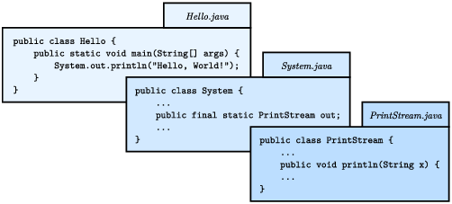
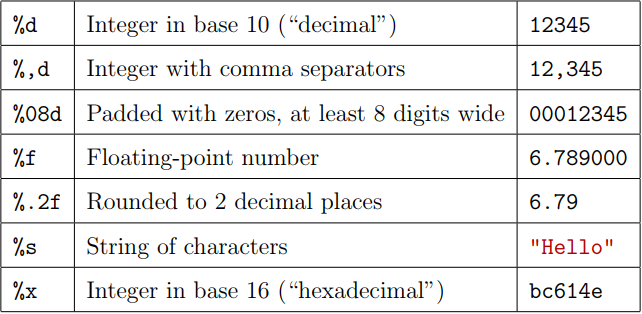
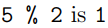
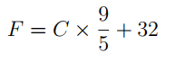

فصل سوم
ورودی و خروجی
(Input and Output)
برنامه هایی که تا اینجا دیدید برنامه های ساده ای بودند که فقط پیام یا پیام هایی را نمایش داده و چندان نیازمند محاسبه نبودند.
این فصل چگونگی خواندن ورودی از صفحه کلید، استفاده از آن ورودی برای محاسبۀ نتیجه، و سپس ارائۀ آن نتیجه در قالب خروجی را به شما نشان خواهد داد.
3.1 کلاس سیستم
(The System Class)
از ابتدای کتاب در حال استفاده از System.out.println هستیم اما ممکن است به معنای آن فکر نکرده باشید. System یک کلاس است که متدهای مرتبط با سیستم، یا محیطی که
برنامه ها در آنجا اجرا می شوند را ارائه می دهد. این کلاس همچنین System.out را ارائه می کند که مقداری است ویژه که حاوی متدهای
اضافی دیگری (مانند println) برای نمایش خروجی است.
حتی برای نمایش مقدار خود System.out نیز می توانیم از System.out.println استفاده کنیم:
System.out.println(System.out);
نتیجۀ کد بالا:
java.io.PrintStream@685d72cd
این خروجی بیانگر این است که System.out یک PrintStream است که در پکیجی به نام java.io تعریف شده است. پکیج (package)، مجموعه ای است از
کلاس های مرتبط با هم. java.io حاوی کلاس هایی است برای I/O که مخفف "input and output" است.
در خروجی بالا اعداد و حروفی که بعد از علامت @ آمده اند آدرس System.out هستند که به صورت عدد هگزادسیمال hexadecimal (مبنای 16) ارائه شده اند.
آدرس یک مقدار، یعنی محلی در حافظۀ کامپیوتر که ممکن است در کامپیوترهای مختلف با هم متفاوت باشند. در این مثال، آدرس عبارت است از 685d72cd، اما
اگر شما همین کد را اجرا کنید احتمالا خروجی متفاوتی دریافت خواهید کرد.
همچنانکه در تصویر زیر نشان داده شده است، System در فایلی به نام System.java و PrintStream در فایلی به نام PrintStream.java تعریف
شده اند. این فایل ها بخشی از کتابخانۀ جاوا (Java library) هستند که مجموعه ای است گسترده از کلاس هایی که از آنها در برنامه های خود استفاده خواهید کرد.
سورس کد این کلاس ها معمولا در کمپایلر موجود است.

3.2 کلاس اسکنر
(The Scanner Class)
کلاس System همچنین مقدار ویژۀ System.in را ارائه می دهد که یک InputStream است که متدهایی برای خواندن ورودی از صفحه کلید دارد. این متدها
برای استفاده مناسب نیستند اما خوشبختانه جاوا کلاس های دیگری دارد که کار خواندن ورودی را آسان کرده اند.
برای مثال، Scanner کلاسی است که متدهایی برای وارد کردن کلمات، اعداد، و دیگر داده ها ارائه می کند. Scanner در پکیج java.util ارائه شده است که
پکیجی است که حاوی کلاس های سودمند (utility classes) مختلفی است. پیش از آنکه بتوانید از Scanner استفاده کنید، باید آن را به این صورت ایمپورت کنید:
import java.util.Scanner;
این گزارۀ ایمپورت به کمپایلر می گوید که وقتی به Scanner اشاره می کنید منظور شما اسکنری است که در پکیج java.util تعریف شده است.
استفاده از گزارۀ ایمپورت در اینجا ضروری است چون ممکن است کلاس دیگری به نام Scanner در پکیجی دیگر وجود داشته باشد.
سپس باید Scanner را مقداردهی اولیه کنید. خط زیر متغیر اسکنری به نام in را اعلان و به این وسیله یک Scanner می سازد که ورودی را از System.in
می خواند.
Scanner in = new Scanner(System.in);
کلاس Scanner متدی به نام nextLine را ارائه می دهد که خطی را از ورودی از صفحه کلید خوانده و یک رشته را بر می گرداند. در زیر مثال کاملی را می بینید
که دو خط را خوانده و همان ها را به کاربر برمی گرداند:
import java.util.Scanner;
public class Echo {
public static void main(String[] args) {
String line;
Scanner in = new Scanner(System.in);
System.out.print("Type something: ");
line = in.nextLine();
System.out.println("You said: " + line);
System.out.print("Type something else: ");
line = in.nextLine();
System.out.println("You also said: " + line);
}
}
گزاره های ایمپورت را نمی توانید داخل تعریف کلاس قرار دهید. مرسوم است که آنها را در ابتدای فایل می نویسند. اگر گزارۀ ایمپورت را حذف کنید،
پیغام خطایی مانند "cannot find symbol" از کمپایلر دریافت می کنید. این پیغام خطا به این معنی است که کمپایلر نمی داند که Scanner در کجا
تعریف شده و در کجا باید آن را پیدا کند.
ممکن است تعجب کنید که چرا می توانیم از کلاس System بدون آنکه آن را ایمپورت کنیم استفاده کنیم. System متعلق به پکیج java.lang است که به صورت
خودکار ایمپورت می شود.
بر اساس داکیومنت جاوا، java.lang «کلاس هایی را ارائه می دهد که در طراحی زبان برنامه نویسی جاوا ضروری هستند». کلاس String هم بخشی از java.lang است.
3.3 عناصر زبان
(Language Elements)
تا اینجا تقریبا تمامی واحدهای سازندۀ برنامه های جاوا را دیدیم. تصویر زیر چگونگی ارتباط میان این «عناصر زبان» را نشان می دهد:

ساختار برنامه های جاوا معمولا به پکیج هایی (مانند java.io و java.util) تقسیم می شود که حاوی کلاس هایی هستند (مانند PrintStream و Scanner). هر
کلاس متدهای خود را تعریف می کند (مانند println و nextLine)، و هر متد دنباله ای از گزاره هاست.
هر گزاره ای بسته به تعداد عبارت هایی که دارد، یک یا چند محاسبه را انجام می دهد، و هر عبارتی مقداری واحد را برای محاسبه ارائه می کند.
برای مثال گزارۀ مقداردهی ;60.0 / minutes = hours حاوی تنها یک عبارت است: 60.0 / minutes.
توکن ها (Tokens) پایه ای ترین عنصر یک برنامه هستند که اعداد، اسامی متغیرها، عملگرها، کلمات کلیدی، پرانتزها، آکولادها و کروشه ها، و سمیکالن ها را در بر می گیرند.
در مثال قبلی، توکن ها عبارتند از hours ،= ،minutes ،/ ،60.0 و ; (کمپایلر، فاصله ها را در نظر نمی گیرد).
دانستن این واژگان فنی سودمند است چون در درک پیغام های خطایی مانند این پیغام ها کمک می کنند:
"not a statement"، "illegal start of expression"، "unexpected token".
اگر بخواهیم زبان جاوا را با زبان انگلیسی مقایسه کنیم، در زبان جاوا گزاره ها (statements) جملاتی کامل هستند، expressionها یا عبارت ها phrase هستند، و توکن ها
کلمات و علائم نشانه گذاری منفرد هستند [پیدا کردن معادل مناسبی برای phrase در اینجا که در درک مفهوم expression اشکالی ایجاد نکند دشوار است.].
توجه کنید که تفاوت زیادی بین زبان جاوا که عناصرش در تصویر بالا تعریف شد، با کتابخانۀ جاوا که حاوی کلاس هایی برای ایمپورت کردن است وجود دارد.
برای مثال کلمات کلیدی public و class بخشی از زبان جاوا هستند اما اسامی PrintStream و Scanner اینطور نیستند.
نسخۀ استاندارد جاوا دارای چندین هزار کلاس است که می توانید از آنها استفاده کنید. این حجم زیاد از کلاس ها هم هیجان انگیز است و هم رعب آور. در
وبسایت اوراکل (https://thinkjava.org/apidoc) می توانید در داخل این کتابخانه جستجو کنید.
3.4 لیترال ها و ثابت ها
(Literals and Constants)
اگرچه سیستم پذیرفته شده در بیشتر نقاط جهان برای وزن ها و اندازه ها سیستم متریک است، اما برخی کشورها همچنان از واحدهای اندازه گیری بریتانیایی استفاده می کنند.
برای مثال وقتی با دوستانتان در اروپا در حال صحبت دربارۀ هوا هستید، مردم امریکا باید سلسیوس را به فارنهایت و یا بالعکس تبدیل کنند، یا ممکن است در حال تبدیل
اینچ به سانتیمتر برای اندازه گیری ارتفاع باشند [این جمله احتمالا کنایه ای است به واحدهای اندازه گیری بریتانیایی که همچنان در آمریکا استفاده می شود. نام اصلی این سیستم
واحدهای امپراطوری imperial units است که در کشورهایی که در قلمرو یا تحت سلطۀ امپراطوری بریتانیا بودند استفاده می شد. به مرور اغلب این کشورها سیستم متریک را
جایگزین واحدهای امپراطوری کردند، اما همچنان در آمریکا از این سیستم قدیمی با کمی تغییر استفاده می شود که بسیاری از خود آمریکایی ها به استفاده از این واحدها اعتراض دارند. احتمالا
این جملات کتاب هم کنایه ای است به همین موضوع.].
می توانیم برای کمک به این مسئله برنامه ای بنویسیم. برای این کار برای وارد کردن اندازه در مقیاس اینچ از Scanner استفاده می کنیم، سپس
اینچ را به سانتیمتر تبدیل می کنیم و در نهایت نتیجه را در صفحه نمایش می دهیم. خطوط زیر متغیرهایی را اعلان و Scanner را می سازند:
int inch;
double cm;
Scanner in = new Scanner(System.in);
گام بعدی دریافت ورودی از کاربر است. برای این کار در اینجا به جای println از print استفاده می کنیم که کاربر بتواند در همان خط پرامپت (prompt)
[خطی که در آن از کاربر خواسته می شود داده ای را وارد کند.] مقدار اینچ را وارد کند. همچنین از متد nextInt موجود در Scanner برای خواندن ورودی از صفحه کلید
و تبدیل آن به عدد صحیح استفاده می کنیم.
System.out.print("How many inches? ");
inch = in.nextInt();
سپس مقدار اینچ را در عدد 2.54 ضرب می کنیم که روش محاسبۀ سانتیمتر بر اساس اینچ است، و در نهایت نتیجه را نمایش می دهیم:
cm = inch * 2.54;
System.out.print(inch + " in = ");
System.out.println(cm + " cm");
این کد خوب کار می کند اما یک مشکل کوچک دارد. اگر یک برنامه نویس دیگر این کد را بخواند ممکن است تعجب کند که عدد 2.54 از کجا آمده است.
برای این که این کد برای دیگران (و همچنین برای خود شما در آینده) کاربردی باشد، بهتر است که این مقدار را در متغیری با اسمی معنی دار ذخیره کنید.
مقداری مانند 2.54 را لیترال (literal) می نامند. به طور کلی استفاده از لیترال ها اشتباه نیست اما وقتی اعدادی مانند 2.54
بدون توضیح در عبارتی استفاده می شوند، خواندن کد را سخت می کنند. و همچنین اگر مقداری بارها در برنامه ای استفاده شود و احتمال تغییر آن در آینده
وجود داشته باشد، نگهداری از چنین کدی مشکل است.
مقادیری مانند 2.54 را گاهی اعداد جادویی (magic numbers) نیز می نامند (جادویی در اینجا معنی مثبتی ندارد). روش درست، اختصاص اعداد جادویی به متغیرهایی
با اسامی معنی دار است، مانند این کد:
double cmPerInch = 2.54;
cm = inch * cmPerInch;
این نسخه از کد خواناتر است و کمتر از کد قبلی مستعد خطاست، اما همچنان خالی از اشکال نیست. متغیرها می توانند تغییر کنند (بنا بر اسمشان)، اما
مقدار سانتیمترها در اینچ تغییر نمی کند و همیشه یک سانتیمتر 2.54 برابر اینچ است. وقتی مقداری را به cmPerInch اختصاص می دهیم، نباید هیچوقت تغییر کند.
جاوا کلمۀ کلیدی final را برای چنین مواردی ارائه کرده است:
final double CM_PER_INCH = 2.54;
اعلان اینکه متغیری final است یعنی پس از مقداردهی اولیه، مقدار آن دیگر تغییر نخواهد کرد. اگر سعی کنید مقدار آن را تغییر دهید، کمپایلر پیغام خطا می دهد.
متغیرهایی که به عنوان final اعلان می شوند را ثابت (constant) می نامند. مرسوم است که اسامی ثابت ها را با حروف بزرگ می نویسند و اگر اسم ثابتی
دارای بیش از یک کلمه باشد، بین کلمات از زیرخط (_) استفاده می شود.
3.5 قالب بندی خروجی
(Formatting Output)
وقتی برای نمایش خروجی از نوع double از print یا println استفاده می کنیم، خروجی آن تا 16 رقم اعشار را نمایش می دهد:
System.out.print(4.0 / 3.0);
خروجی:
1.3333333333333333
این مقدار ممکن است بیش از آن چیزی باشد که شما می خواهید. System.out متد دیگری به نام printf را ارائه می دهد که در آن کنترل بیشتری بر روی فرمت
خروجی دارید. حرف f در printf مخفف formatted است. مثال:
System.out.printf("Four thirds = %.3f", 4.0 / 3.0);
اولین مقدار داخل پرانتز فرمت استرینگ (format string) نام دارد که مشخص می کند خروجی چگونه باید نمایش داده شود. فرمت استرینگ کد بالا، حاوی یک متن
معمولی است به همراه یک فرمت اسپسیفایر (format specifier) یا تصریح کنندۀ فرمت خروجی که دنباله ای ویژه است که با یک علامت درصد شروع می شود.
برای مثال فرمت اسپسیفایر 3f.% بیانگر این است که مقداری که در پی آن می آید باید به عنوان عددی ممیز-شناور (اعشاری) نمایش داده شود و تعداد رقمهای اعشاری
آن به 3 رقم گرد شود.
Four thirds = 1.333
فرمت استرینگ می تواند حاوی هر تعداد فرمت اسپسیفایری باشد، در زیر مثالی را می بینید که در آن از دو فرمت اسپسیفایر استفاده شده است:
int inch = 100;
double cm = inch * CM_PER_INCH;
System.out.printf("%d in = %f cm\n", inch, cm);
خروجی:
100 in = 254.000000 cm
printf هم مانند print، به خروجی، خط جدید (newline) اضافه نمی کند، بنابراین در انتهای اغلب فرمت استرینگ ها از کاراکتر newline استفاده می شود.
فرمت اسپسیفایر d% مقادیر صحیح (integer) را نمایش می دهد (d مخفف decimal است، که به معنی عدد صحیح بر مبنای 10 است.). مقادیری که باید نمایش
داده شوند، به ترتیب با فرمت اسپسیفایرها جفت می شوند، بنابراین در مثال بالا inch با استفاده از d%، و cm با استفاده f% نمایش داده می شود.
یادگیری فرمت استرینگ ها مانند یادگیری زبانی کوچک درون زبان جاواست. گزینه های زیادی در آنها وجود دارد و یادگیری جزئیات آن ممکن است طاقت فرسا باشد.
در جدول زیر تعدادی از پرکاربردترین فرمت استرینگها لیست شده اند تا با چگونگی کار آنها آشنا شوید:

برای جزئیات بیشتر در این باره، در داکیومنت جاوا بخش java.util.Formatter را بخوانید. راحت ترین راه برای پیداکردن داکیومنت کلاس های جاوا این است
که در اینترنت اسم Java را به همراه اسم کلاس مورد نظرتان جستجو کنید.
3.6 خواندن پیغام های خطا
(Reading Error Messages)
دقت کنید که مقادیری که به تابع printf پاس می دهید را با کاما از هم جدا کنید. اگر در این تابع از عملگر + برای الحاق رشته ها به هم استفاده کنید،
ممکن است کد اشتباهی مانند کد زیر را بنویسید:
System.out.printf("inches = %d" + inch); // error
این کد مجاز است و کمپایلر از آن اشکالی نخواهد گرفت، اما وقتی برنامه را اجرا کنید پیغام خطای exception از مفسر دریافت می کنید:
Exception in thread "main" java.util.MissingFormatArgumentException:
Format specifier '%d'
at java.util.Formatter.format(Formatter.java:2519)
at java.io.PrintStream.format(PrintStream.java:970)
at java.io.PrintStream.printf(PrintStream.java:871)
at Example.main(Example.java:10)
همچنانکه در فصل قبل در بخش 2.10 دیدید، پیغام خطا، اسم exception یعنی MissingFormatArgumentException را به همراه جزئیات دیگری مانند
فرمت اسپسیفایر d% در بر داشت. این یعنی مفسر نمی داند که دقیقا چه مقداری باید جایگزین d% شود.
مشکل اینجاست که وقتی از عملگر الحاق رشته ها یعنی (+) در تابع printf استفاده می کنید، عمل الحاق پیش از printf اجرا می شود. اگر مقدار inch برابر
با 100 باشد، نتیجۀ الحاق رشته ها به اینصورت خواهد شد: "inches = %d100". بعد از این الحاق، printf اجرا می شود و فرمت استرینگ را دریافت می کند، اما
هیچ مقداری که بتواند آن را متناسب با d% فرمت کند پیدا نمی کند [در اینجا مفسر انتظار عدد صحیح دارد، اما ما عدد 100 که مقدار متغیر inches بود را
با عملگر + به رشتۀ کنار آن چسبانده ایم].
پیغام خطایی که دریافت می کنیم همچنین حاوی stack trace یا «ردیابی پشته» است که متدهایی را نشان می دهد از جمله متد java.util.Formatter.format که به هنگام تشخیص خطا اجرا شده بود،
متد اجرا کنندۀ این متد یعنی java.io.PrintStream.format، و متد java.io.PrintStream.printf را که این متد را اجرا کرده است، و در نهایت متدی را که شما نوشته اید:
Example.main [در اینجا Example نام کلاسی است که شما نوشته اید. اگر متد printf داخل متد main باشد، این پیغام خطا را دریافت می کنید، اما اگر در متدی دیگری باشد
آن متد به همراه متدهایی که آن را فراخوانی کرده اند در این پیغام خطا نشان داده می شوند.].
در هر خط همچنین اسم فایل سورس و شمارۀ خطی که آن متد در آن قرار دارد آمده است (مثل Example.java:10). اطلاعات زیادی در این پیغام خطا وجود دارد که حاوی اسامی متدها و فایل هایی است
که الان لزومی ندارد آنها را یاد بگیرید.
وقتی چنین پیغام خطایی را دریافت می کنید، برای درک مشکل پیش آمده، اولین خط را به دقت بخوانید. سپس برای اینکه بفهمید این خطا در کجای برنامه
اتفاق افتاده خط آخر را بخوانید. در برخی IDE ها اگر روی پیغام خطا کلیک کنید، IDE محل خطا را نمایش می دهد. اما به یاد داشته باشید که محلی که توسط IDE ها
نشان داده می شود همیشه همان محلی نیست که باعث بوجود آمدن خطا شده است.
3.7 عملگرهای تبدیل نوع
(Type Cast Operators)
اکنون فرض کنید که اندازه ای را در مقیاس سانتیمتر در اختیار داریم و قصد گرد کردن آن را به نزدیک ترین اندازه در مقیاس اینچ داریم. برای اجرای این ایده
می توان نوشت:
inch = cm / CM_PER_INCH; // syntax error
اما این کد کمپایل نمی شود و چنین پیغام خطایی "incompatible types: possible lossy conversion from double to int" دریافت می کنید [توجه کنید که پیغام های
خطا ممکن است در IDE های مختلف متفاوت باشند. برای مثال در intelliJ به محض نوشتن این کد و پیش از آنکه بتوانید کد را کمپایل کنید، کد مشکل زا با رنگ قرمز مشخص می شود.
این پیغام خطایی که در اینجا آمده است و اغلب پیغام خطاهای دیگر این کتاب مربوط به برنامۀ DrJava هستند.]. مشکل اینجاست که مقدار سمت راست از نوع اعشاری است اما متغیر سمت چپ
از نوع صحیح است [همانطور که در همین فصل دیدید inch را از نوع int و cm و CM_PER_INCH را از نوع double اعلان کردیم.].
جاوا می تواند به صورت خودکار نوع int را به نوع double تبدیل کند چون در این فرایند هیچ اطلاعاتی از بین نمی رود. از سوی دیگر تبدیل double به int باعث از
دست رفتن مقادیر اعشاری می شود.جهت اطمینان از اینکه شما آگاهانه قصد حذف بخش اعشاری عددی را دارید، جاوا این تبدیل را به صورت خودکار انجام نمی دهد .
ساده ترین راه تبدیل مقدار اعشاری به صحیح استفاده از type cast یا تبدیل نوع است. نحوۀ نوشتن تبدیل نوع (تایپ کستینگ) به این صورت است که اسم نوع را داخل پرانتز
نوشته و از آن مانند یک عملگر استفاده می شود:
double pi = 3.14159;
int x = (int) pi;
عملگر (int) هر مقداری که پس از آن بیاید را به عدد صحیح تبدیل می کند. در مثال بالا مقدار 3 در x قرار می گیرد.تبدیل نوع به عدد صحیح هم مانند تقسیم صحیح
همیشه به سمت صفر گرد می شود حتی اگر بخش کسری 0.999999 (یا 0.999999-) باشد. به عبارت دیگر تبدیل نوع به عدد صحیح به راحتی بخش کسری را حذف می کند.
البته نوع ها باید متناسب با عملگر تبدیل باشند. برای مثال شما نمی توانید نوع String را به int تبدیل کنید چون string عدد نیست:
String str = "3";
int x = (int) str; // error: incompatible types
تبدیل نوع بر عملگرهای حسابی اولویت دارد. در مثال زیر مقدار pi پیش از آنکه در 20.0 ضرب شود به عدد صحیح تبدیل می شود:
double pi = 3.14159;
double x = (int) pi * 20.0; // result is 60.0, not 62.0
در زیر چگونگی تبدیل سانتی متر به اینچ را با در نظر داشتن این مسئله نوشته ایم:
inch = (int) (cm / CM_PER_INCH);
System.out.printf("%f cm = %d in\n", cm, inch);
از آنجا که عبارت حاوی تقسیم داخل پرانتز نوشته شده است، ابتدا عمل تقسیم انجام می شود، سپس حاصل تقسیم به سمت صفر گرد می شود. در فصل بعد
یاد خواهید گرفت که اعداد اعشاری را چگونه به نزدیک ترین عدد صحیح گرد کنید.
3.8 عملگر باقی مانده
(Remainder Operator)
بیایید این مثال را یک گام جلوتر ببریم: فرض کنید که اندازه ای بر حسب اینچ در اختیار داریم و می خواهیم آن را به فوت تبدیل کنیم اما مقدار اینچ باقی مانده را نیز
حساب کنیم. قصد داریم مقدار اینچ را تقسیم بر 12 کنیم (مقدار اینچ در هر یک فوت) و باقی مانده را نیز بدست آوریم.
پیشتر عملگر تقسیم را دیدید (/)، که خارج قسمت دو عدد را محاسبه می کند. اگر اعداد از نوع صحیح باشند، عمل تقسیم صحیح انجام می شود [و باقی مانده از بین می رود].
در جاوا عملگری به نام modulo وجود دارد که نماد آن (%) است و کار آن تقسیم دو عدد بر هم و محاسبۀ باقی ماندۀ این تقسیم است.
با استفاده از عملگرهای تقسیم و modulo می توانیم مانند مثال زیر فوت را به اینچ تبدیل کنیم:
feet = 76 / 12; // quotient
inches = 76 % 12; // remainder
حاصل خط اول عدد 6 است. حاصل خط دوم که "76 مد 12" خوانده می شود عدد 4 است. بنابراین 76 اینچ برابر است با 6 فوت و 4 اینچ.
بسیاری از افراد (و کتاب ها) به اشتباه % را عملگر modulus می نامند. در حالیکه در ریاضیات modulus عددی است که شما عددی را بر آن
تقسیم می کنید. در مثال قبل، modulus عدد 12 است.
داکیومنت زبان جاوا از % تحت عنوان عملگر باقی مانده (remainder operator) یاد می کند. عملگر باقی مانده شبیه به علامت درصد است اما اگر
آن را مانند علامت تقسیمی (÷) در نظر بگیرید که کمی چرخیده است، در به یاد سپردن آن به شما کمک می کند.
حساب modular [یعنی انجام محاسبه با استفاده از عملگر modulo] به طور اعجاب آوری کاربردی است. برای مثال برای محاسبۀ اینکه آیا عددی بر عددی
دیگر بخش پذیر است می توانید بنویسید: if x % y is 0، پس x بر y بخش پذیر است. می توانید از عملگر باقی مانده برای استخراج (extract) ارقام یک عدد استفاده کنید:
برای مثال با x % 10، رقم سمت راست عدد x را بدست می آورید و با x % 100 دو رقم آخر این عدد را به دست خواهید آورد. برای مثال در بسیاری از
الگوریتم های encryption از باقی مانده ها به طور گسترده استفاده می شود.
3.9 جمع بندی
(Putting It All Together)
تا اینجا شما به اندازه ای جاوا یاد گرفتید که بتوانید برنامه هایی کاربردی برای حل مسائل روزمره بنویسید. می توانید (1) کلاس های کتابخانۀ
جاوا را ایمپورت کنید، (2) یک Scanner بسازید، (3) از صفحه کلید، ورودی دریافت کنید، (4) خروجی را با استفاده از printf قالب بندی کنید، و (5) اعداد
صحیح را تقسیم و یا باقی ماندۀ آنها را محاسبه کنید. اکنون تمام این موارد را در کنار هم قرار می دهیم تا یک برنامۀ کامل بسازیم:
import java.util.Scanner;
/**
* Converts centimeters to feet and inches.
*/
public class Convert {
public static void main(String[] args) {
double cm;
int feet, inches, remainder;
final double CM_PER_INCH = 2.54;
final int IN_PER_FOOT = 12;
Scanner in = new Scanner(System.in);
// prompt the user and get the value
System.out.print("Exactly how many cm? ");
cm = in.nextDouble();
// convert and output the result
inches = (int) (cm / CM_PER_INCH);
feet = inches / IN_PER_FOOT;
remainder = inches % IN_PER_FOOT;
System.out.printf("%.2f cm = %d ft, %d in\n",
cm, feet, remainder);
}
}
در کد بالا تمامی متغیرها و ثابت ها در بالای متد main اعلان شده اند، اگر چه الزامی در اعلان متغیرها در ابتدای متد نیست. این کار باعث می شود
اگر بعدا خواستید نوع هر یک از آنها را چک کنید، راحت تر بتوانید آنها را پیدا کنید و همچنین این کار به کسی که کد را می خواند کمک می کند تا از
داده های دخیل در الگوریتم مطلع شود [البته در این باب نظریات متفاوتی وجود دارد، برخی معتقدند که بهتر است متغیرها و ثابت ها را در همان جایی
که قصد استفاده از آنها را دارید اعلان کنید.].
برای آنکه کد خواناتر باشد، هر بخش بزرگ از الگوریتم با یک خط خالی از دیگر بخش ها جدا و با یک کامنت شروع شده است. کلاس همچنین حاوی یک کامنت
داکیومنت (**/) است که در ضمیمۀ ب بیشتر می توانید دربارۀ آن یاد بگیرید.
بسیاری از الگوریتم ها از جمله برنامۀ Convert عمل تقسیم و محاسبۀ باقی مانده را به همراه هم انجام می دهند. در هر دوی آنها مقسوم علیه یکی است (IN_PER_FOOT).
وقتی گزاره ها از جمله گزارۀ System.out.printf طولانی می شوند (معمولا طولانی تر از 80 کاراکتر)، الگوی مرسوم این است که آن را در چند خط می نویسند.
خوانندۀ کد هیچوقت نباید مجبور باشد که برای خواندن کد از اسکرول افقی استفاده کند.
3.10 باگ اسکنر
(The Scanner Bug)
اکنون که در استفاده از Scanner کمی تجربه دارید، می خواهیم به شما دربارۀ یکی از رفتارهای غیرقابل انتظار آن اخطار بدهیم. کد زیر از کاربر
می خواهد اسم و سنش را وارد کند:
System.out.print("What is your name? ");
name = in.nextLine();
System.out.print("What is your age? ");
age = in.nextInt();
System.out.printf("Hello %s, age %d\n", name, age);
خروجی کد بالا چیزی مانند خروجی زیر خواهد بود:
Hello Grace Hopper, age 45
وقتی از صفحه کلید یک String و پس از آن یک int می خوانید، همه چیز خوب کار می کند، اما وقتی ابتدا یک int و پس از آن یک String از صفحه کلید
می خوانید، اتفاق عجیبی می افتد:
System.out.print("What is your age? ");
age = in.nextInt();
System.out.print("What is your name? ");
name = in.nextLine();
System.out.printf("Hello %s, age %d\n", name, age);
مثال بالا را اجرا کنید. برنامه به شما اجازه نمی دهد که اسم خود را وارد کنید و پیش از آن، فورا خروجی زیر را نمایش می دهد:
What is your name? Hello , age 45
برای درک اینکه چه اتفاقی در برنامه بالا می افتد، باید بدانید که Scanner ورودی را مانند ما در چند خط نمی بیند. Scanner ورودی را
مانند تصویری که در زیر آمده به عنوان جریانی از کاراکتر ها (stream of characters) در نظر می گیرد.
در تصویر زیر علامت فلش به کاراکتر بعدیی اشاره می کند که توسط Scanner خوانده می شود. وقتی nextInt را اجرا می کنید، Scanner تا
زمانی که به کاراکتری غیر رقمی برسد، کاراکترها را می خواند.
تصویر زیر وضعیت روند اجرا را بعد از اجرای nextInt نشان می دهد:
در این نقطه، nextInt مقدار 45 را بر می گرداند. برنامه سپس "?What is your name " را نمایش می دهد و nextLine را اجرا می کند
که کاراکترها را تا زمانی که به خط جدید (newline) برسد می خواند [بنابراین نقطۀ قطع جریان خواندن کاراکترها در nextLine جایی است
که Scanner به newline می رسد.]. اما از آنجا که کاراکتر بعدی [یعنی کاراکتر بعد از 45]، خودش newline است [n\]، بنابراین nextLine یک
رشتۀ خالی برمی گرداند " ".
برای رفع این مشکل باید یک nextLine اضافه بعد از nextInt بنویسید:
System.out.print("What is your age? ");
age = in.nextInt();
in.nextLine(); // read the newline
System.out.print("What is your name? ");
name = in.nextLine();
System.out.printf("Hello %s, age %d\n", name, age);
3.11 واژگان
(Vocabulary)
پکیج (package):
فهرستی از کلاس های مرتبط با هم.
آدرس (address):
محل یک مقدار در حافظۀ کامپیوتر که اغلب به صورت عدد صحیح هگزادسیمال [مبنای 16] بیان می شود.
;کتابخانه (library):
مجموعه ای از پکیج ها و کلاس ها که برای استفاده توسط برنامه های دیگر در دسترس هستند.
گزارۀ ایمپورت (import statement):
گزاره ای که به برنامه ها اجازه می دهد از کلاس های تعریف شده در پکیج ها استفاده کنند.
توکن (token):
کوچکترین واحد سورس کد مانند یک کلمۀ تنها، مقدار لیترال، یا نماد (symbol).
لیترال (literal):
خود مقداری که در سورس کد ظاهر می شود. برای مثال "Hello" یک لیترال از نوع رشته و 74 یک لیترال صحیح است.
پرامپت (prompt):
پیام کوتاهی که در گزارۀ پرینت نوشته می شود و بدین وسیله از کاربر خواسته می شود که مقداری را وارد کند.
عدد جادویی (magic number):
عددی که بدون هیچ توضیحی به عنوان بخشی از یک عبارت در سورس کد نوشته می شود. این عدد را عموما باید با یک ثابت جایگزین کرد.
ثابت (constant):
متغیری که با استفاده از کلمۀ کلیدی final تعریف می شود و مقدارش تغییر نمی کند.
قالب بندی رشته (format string):
رشته ای که در System.out.printf نوشته می شود و فرمت یا قالب خروجی را مشخص می کند.
فرمت اسپسیفایر (format specifier):
کد خاصی که با یک علامت درصد شروع می شود و نوع داده را مشخص می کند و مقدار متناظر با آن را فرمت (قالب بندی) می کند.
ردیابی پشته (stack trace):
وقتی خطایی از نوع exception اتفاق می افتد، پیغام ردیابی پشته متدهای دخیل در آن خطا را نشان می دهد.
تبدیل نوع (type cast):
عملگری که صریحا نوع داده ای را به نوع دیگر تبدیل می کند. در جاوا برای این کار اسم نوع مورد نظر داخل پرانتز نوشته می شود، برای مثال (int).
modulo:
عملگری که باقی ماندۀ تقسیم یک عدد صحیح بر عددی دیگر را بدست می آورد. در جاوا این عملگر با علامت درصد مشخص می شود:

modulus:
مقدار b در عبارت a % b. مقدار modulus اغلب نشان دهندۀ تبدیل واحد است، مانند 24 ساعت در یک روز، 60 دقیقه در یک ساعت، و سایر.
3.12 تمرین ها
(The System Class)
System.out.println(System.out);
java.io.PrintStream@685d72cd
(The Scanner Class)
import java.util.Scanner;
Scanner in = new Scanner(System.in);
import java.util.Scanner;
public class Echo {
public static void main(String[] args) {
String line;
Scanner in = new Scanner(System.in);
System.out.print("Type something: ");
line = in.nextLine();
System.out.println("You said: " + line);
System.out.print("Type something else: ");
line = in.nextLine();
System.out.println("You also said: " + line);
}
}
(Language Elements)
(Literals and Constants)
int inch;
double cm;
Scanner in = new Scanner(System.in);
System.out.print("How many inches? ");
inch = in.nextInt();
cm = inch * 2.54;
System.out.print(inch + " in = ");
System.out.println(cm + " cm");
double cmPerInch = 2.54;
cm = inch * cmPerInch;
final double CM_PER_INCH = 2.54;
(Formatting Output)
System.out.print(4.0 / 3.0);
1.3333333333333333
System.out.printf("Four thirds = %.3f", 4.0 / 3.0);
Four thirds = 1.333
int inch = 100;
double cm = inch * CM_PER_INCH;
System.out.printf("%d in = %f cm\n", inch, cm);
100 in = 254.000000 cm
(Reading Error Messages)
System.out.printf("inches = %d" + inch); // error
Exception in thread "main" java.util.MissingFormatArgumentException:
Format specifier '%d'
at java.util.Formatter.format(Formatter.java:2519)
at java.io.PrintStream.format(PrintStream.java:970)
at java.io.PrintStream.printf(PrintStream.java:871)
at Example.main(Example.java:10)
(Type Cast Operators)
inch = cm / CM_PER_INCH; // syntax error
double pi = 3.14159;
int x = (int) pi;
String str = "3";
int x = (int) str; // error: incompatible types
double pi = 3.14159;
double x = (int) pi * 20.0; // result is 60.0, not 62.0
inch = (int) (cm / CM_PER_INCH);
System.out.printf("%f cm = %d in\n", cm, inch);
(Remainder Operator)
feet = 76 / 12; // quotient
inches = 76 % 12; // remainder
(Putting It All Together)
import java.util.Scanner;
/**
* Converts centimeters to feet and inches.
*/
public class Convert {
public static void main(String[] args) {
double cm;
int feet, inches, remainder;
final double CM_PER_INCH = 2.54;
final int IN_PER_FOOT = 12;
Scanner in = new Scanner(System.in);
// prompt the user and get the value
System.out.print("Exactly how many cm? ");
cm = in.nextDouble();
// convert and output the result
inches = (int) (cm / CM_PER_INCH);
feet = inches / IN_PER_FOOT;
remainder = inches % IN_PER_FOOT;
System.out.printf("%.2f cm = %d ft, %d in\n",
cm, feet, remainder);
}
}
(The Scanner Bug)
System.out.print("What is your name? ");
name = in.nextLine();
System.out.print("What is your age? ");
age = in.nextInt();
System.out.printf("Hello %s, age %d\n", name, age);
Hello Grace Hopper, age 45
System.out.print("What is your age? ");
age = in.nextInt();
System.out.print("What is your name? ");
name = in.nextLine();
System.out.printf("Hello %s, age %d\n", name, age);
What is your name? Hello , age 45
System.out.print("What is your age? ");
age = in.nextInt();
in.nextLine(); // read the newline
System.out.print("What is your name? ");
name = in.nextLine();
System.out.printf("Hello %s, age %d\n", name, age);
(Vocabulary)
کدهای این فصل در پوشۀ ch03 موجود در پوشۀ ThinkJavaCode2 قرار دارد. نحوۀ دانلود مخزن در مقدمۀ کتاب آمده است. پیش از شروع تمرین ها پیشنهاد می کنیم که مثال ها را کمپایل و اجرا کنید.
اگر هنوز پیوست A.3 را نخوانده اید، اکنون زمان مناسبی برای این کار است. در این پیوست دربارۀ رابط خط فرمان (command-line interface) توضیح داده شده است که شیوه ای قدرتمند و کارا برای ارتباط با کامپیوتر است.
تمرین 3.1:
وقتی از printf استفاده می کنید، کمپایلر جاوا فرمت استرینگ شما را بررسی نمی کند [بنابراین حتی اگر مقدار نوشته شده متناسب با فرمت اسپسیفایر نباشد، فایل سورس کمپایل می شود.]. ببینید اگر مقداری از نوع int را با f% اجرا کنید چه اتفاقی می افتد، و چه رخ خواهد داد اگر مقداری از نوع double را با استفاده از d% اجرا کنید؟ چه خواهد شد اگر دو فرمت اسپسیفایر بنویسید اما فقط یک مقدار وارد کنید؟تمرین 3.2:
برنامه ای بنویسید که دما را از واحد سلسیوس به واحد فارنهایت تبدیل کند. این برنامه باید (1) از کاربر بخواهد مقداری را وارد کند، (2) مقداری از نوع double را از صفحه کلید بگیرد (3) حاصل را بدست آورد (4) خروجی را تا یک رقم اعشار فرمت (قالب بندی) کند. خروجی در نهایت باید مانند زیر باشد:
Enter a temperature in Celsius: 24
24.0 C = 75.2 F
فرمول تبدیل سلسیوس به فارنهایت:

نکته: مراقب باشید که از تقسیم صحیح استفاده نکنید!
تمرین 3.3:
برنامه ای بنویسید که عددی را از ثانیه به ساعت، دقیقه، و ثانیه تبدیل کند. این برنامه باید (1) از کاربر بخواهد مقداری را وارد کند (2) عددی صحیح را از صفحه کلید بگیرد، (3) حاصل را بدست آورد (4) برای نمایش خروجی از printf استفاده کند. برای مثال «5000 ثانیه برابر است با 1 ساعت و 23 دقیقه و 20 ثانیه».نکته: از عملگر باقی مانده استفاده کنید.
تمرین 3.4:
هدف این تمرین ساخت بازی حدس زدن عدد است. پس از اتمام، خروجی باید مانند زیر باشد:
I'm thinking of a number between 1 and 100
(including both). Can you guess what it is?
Type a number: 45
Your guess is: 45
The number I was thinking of is: 14
You were off by: 31
برای انتخاب یک عدد تصادفی می توانید از کلاس Random که در پکیج java.util قرار دارد استفاده کنید. به صورت زیر:
import java.util.Random;
public class GuessStarter {
public static void main(String[] args) {
// pick a random number
Random random = new Random();
int number = random.nextInt(100) + 1;
System.out.println(number);
}
}
کلاس Random هم مانند کلاس Scanner که در این فصل خواندید باید پیش از استفاده ایمپورت شود. و مانند Scanner باید از عملگر new برای
ایجاد Random (تولید کنندۀ عدد) استفاده کنید.
سپس باید از متد nextInt برای تولید یک عدد تصادفی استفاده کنید. در این مثال حاصل nextInt(100) مقداری بین 0 تا 99 خواهد بود، خود 0 و 99 هم در این بازه قرار دارند. با اضافه کردن عدد 1 به آن، مقداری بین 1 تا 100 (که هر دوی این اعداد را نیز در بر دارد) تولید خواهد شد.
1. GuessStarter در فایلی به نام GuessStarter.java تعریف شده و در پوشۀ ch03 در مخزن این کتاب در گیت هاب موجود است.
2. این فایل را کمپایل و اجرا کنید.
3. برنامه را طوری تغییر دهید که از از کاربر بخواهد مقدار را وارد کند، سپس با استفاده از Scanner یک خط از ورودی بخوانید. سپس برنامه را کمپایل و اجرا کنید.
4. ورودی کاربر را به عنوان عدد صحیح گرفته و نتیجه را نمایش دهید. دوباره برنامه را کمپایل و تست کنید.
5. اختلاف میان عدد حدس زده شده توسط کاربر و عدد تولید شده را محاسبه و نمایش دهید.